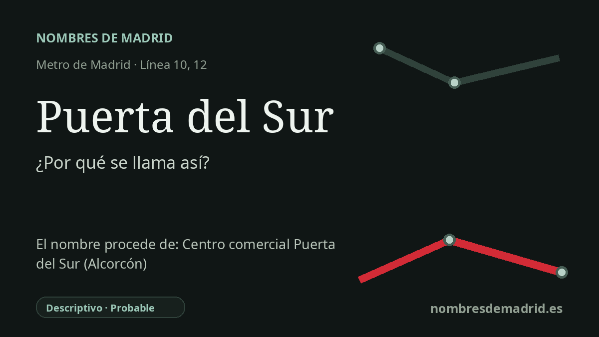

Publicado el · Investigación de Nombres de Madrid · Cómo verificamos cada origen · 5 fuentes consultadas
Respuesta rápida
Puerta del Sur significa puerta meridional. El nombre describe la función de la estación como acceso de Metro entre la línea 10 de Madrid y el anillo de MetroSur que sirve a los municipios del sur metropolitano.
La historia del nombre
Puerta del Sur es un nombre descriptivo moderno: literalmente, una puerta hacia el sur. En términos de transporte, nombra el punto en el que Metro de Madrid se abre al anillo metropolitano meridional, enlazando la línea 10 con la línea 12, MetroSur.
El nombre no parece conservar un topónimo rural antiguo ni homenajear a una persona. Su sentido está ligado a la geografía de la red: desde el centro y el norte de Madrid, la línea 10 llega aquí a Alcorcón, y desde esta estación los viajeros entran en el sistema circular de MetroSur que sirve a los grandes municipios del sur y suroeste.
Ese contexto pertenece a la gran ampliación de Metro culminada en 2003. MetroSur se concibió como un anillo de más de 40 kilómetros y 28 estaciones, que conectaba Alcorcón, Móstoles, Fuenlabrada, Getafe y Leganés, mientras la línea 10 se prolongaba para enlazar con él en Puerta del Sur. Los relatos técnicos de la obra describen expresamente la estación como el nexo de comunicación entre Metro de Madrid y MetroSur.
La arquitectura refuerza esa función. Puerta del Sur es una estación doble, con los andenes de la línea 10 y de MetroSur en niveles distintos y cruzados entre sí; la documentación regional la presenta como una estación singular de correspondencia dentro del proyecto MetroSur. También el arte público alude al tema meridional: la obra de Jorge Bernabeu instalada en la estación se titula "Paisajes del Sur".
El origen general del nombre es, por tanto, sólido, aunque no consta una resolución formal de denominación que explique la elección exacta de las palabras. La ficha no debería afirmar que la estación se llamó así por un centro comercial Puerta del Sur en Alcorcón: las fuentes apuntan a su función de transporte, y las instituciones cercanas que usan después ese nombre parecen posteriores a la estación de Metro.